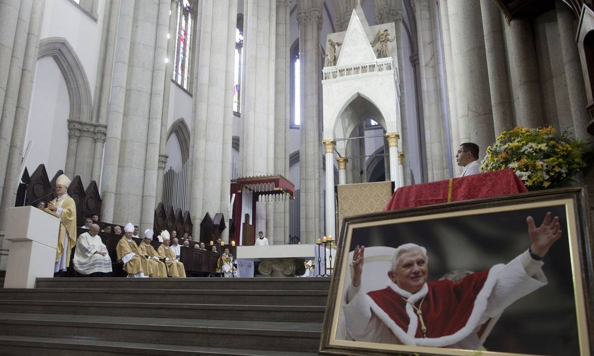

Cardeal Dom Odilo Pedro Scherer visita o papa em 2023
Confira os assuntos tratados com o Sumo Pontifice em Roma...
"Alegra-te, cheia de graça, o Senhor é contigo."
Conheça nossa históriaUm lugar de paz, fé e devoção à Mãe de Deus. A Catedral Metropolitana Nossa Senhora da Assunção é um ponto de encontro para fiéis que buscam conforto espiritual e comunidade.
Com arquitetura inspiradora e uma comunidade acolhedora, celebramos diariamente a palavra de Deus e os sacramentos.

Segunda a Sexta: 12h e 18h
Sábado: 18h
8h, 10h, 12h, 18h e 20h
Diariamente: 30min antes das missas
ou com agendamento
Entrar em contato com a ArqueDiocese, para maiores informações
Agende sua confissão com nosso padre
"Aquele que está arrependido de seus pecados encontra no confessionário o abraço misericordioso do Pai."
O segredo da confissão é inviolável. Seu agendamento é totalmente sigiloso.
Confissões agendadas este mês
Próxima confissão disponível
Sua contribuição ajuda a manter nossas atividades e projetos
Selecione um valor e gere o QR Code
Ajude na conservação do nosso templo
Alimentação para famílias necessitadas
Material para catequese infantil
Confira os assuntos tratados com o Sumo Pontifice em Roma...
Confira mais informação sobre o conclave que elegeu o novo Sumo Pontifice: Papa Leão!
Morre o Sumo Romano Pontifice Papa Francisco Vaticano confirma sua morte...


.png)


Praça da Sé - São Paulo/SP
(11) 1234-5678
catedral@gmail.com
Visite-nos. Estamos localizados no coração de São Paulo.
Nossa Senhora da Assunção
Praça da Sé, s/n - Sé
São Paulo - SP, 01001-000
Igreja: Todos os dias, 7h às 19h
Secretaria: Segunda a Sexta, 9h às 17h
Missas: Consulte a seção "Horários"
Metrô: Estação Sé (Linhas 1-Azul e 3-Vermelha)
Ônibus: Diversas linhas param na Praça da Sé
Estacionamento: Shopping Sé (R$ 10 por 2h)